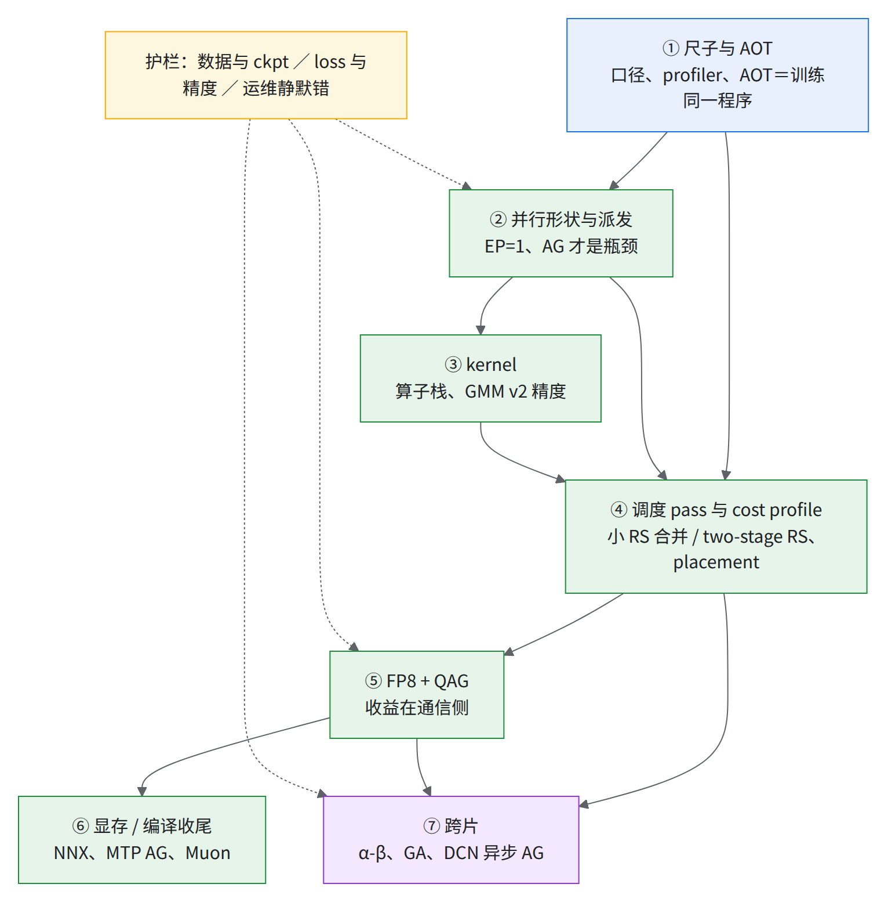
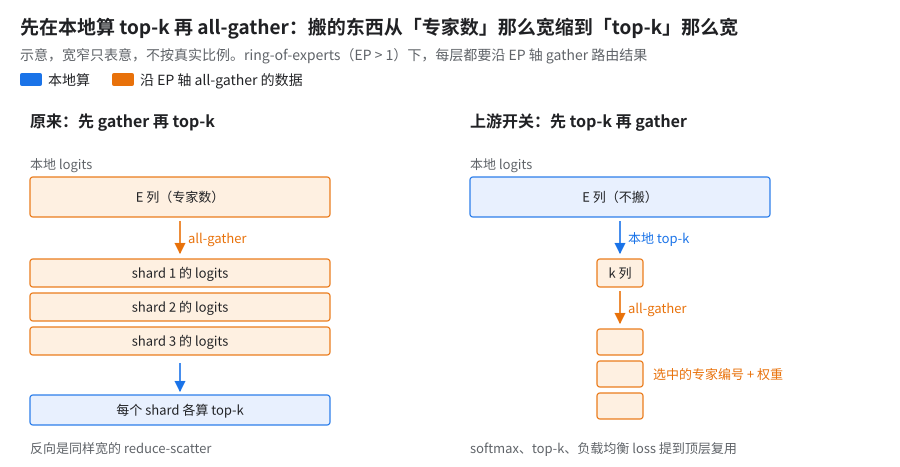
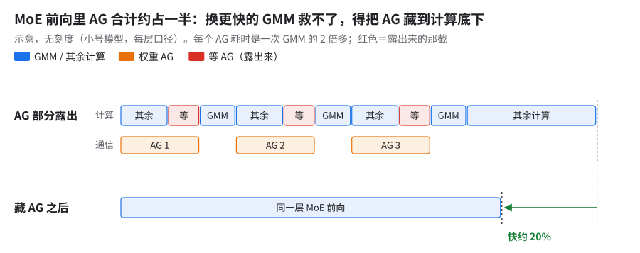
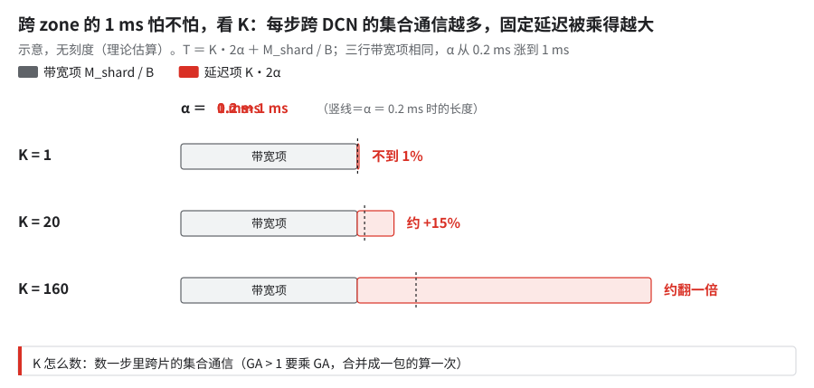
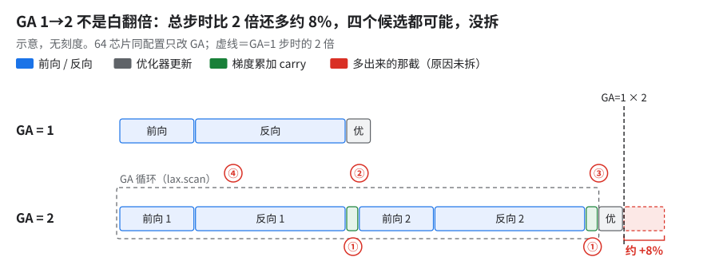

10 · 优化依赖图：哪刀先哪刀后、为什么这个顺序
这章回答：几百个改动里，哪些必须先做、哪些要等别的做完才有意义，顺序背后的理由是什么。
直觉：先有可信的尺子，才知道刀往哪下；而最大的几刀都在改「通信什么时候发」，它们要等调度 pass 和 cost profile 就位才砍得下去。所以顺序是：尺子 → 并行形状 → kernel → 调度 pass → FP8 + QAG → 显存 / 编译收尾 → 跨片；数据、精度、运维三类护栏贯穿全程。
- 尺子排第一：口径、profiler、AOT 与训练是否同一个程序，这三样不对，后面每一刀的收益都量不准。
- 最大的几刀都不是「单个算子更快」：调度 pass、换对 cost profile、跨片走异步 all-gather，都在改「通信什么时候发」，所以都排在调度 pass 之后；tile、融合方式这类计算块形状的选择例外，要在调度 pass 之前定下来。
- 「静默」是头号敌人：本章展开的 40 条里约四成是「开关没生效 / 退回了别的路径 / 统计量是 0」却不报错。
- 100 → 16 小号模型 64 芯片（主要靠 EP 2→1、remat 看见 kernel 内部、tile 重选，见 README「一段话讲完整条路」）
- 100 → 37 大号模型 256 芯片（快约 2.7×）
- 71 → 47 10+ 片 JIT 基线 → 10+ 片 AOT 中间档（快约 35%；JIT 基线剔除慢步与含慢步的中位都约 71；口径见 03、README「三个起点各指什么」）
- 快约 7% 同一份源码只换 cost profile（cost profile ＝ 用当前代码跑一次抓的 trace，调度 pass 拿它估每个算子多久，02）
- 40 条本章展开（7 层 24 条 ＋ 3 类护栏 16 条），其余链到别章
卡片末行形如 13 §3.1｜A01：前段是别章展开处，后段是 11 迁移清单 的条目编号，没有就写「—」。步时一律是指数（大号模型单片 BF16 最初基线 ＝ 100，小号模型开发期起点 ＝ 100，两者不互比）；只出现在一次 A/B 里的数只给百分比。
1.为什么是这个顺序

六条顺序的理由：
- 先修尺子，再谈快慢。 MFU 口径（01 §3）、profiler 丢 trace（§2.1）、cost profile 刷新（只换 profile 就快 7%）都是尺子。尺子歪着，后面每刀都可能记错账。修正确性的改动不提速，但它是后续加速的前提。
- 大刀在通信时机，不在算子（§6.1、§3.2、02）。所以 kernel 只排在调度 pass 之前「先把计算块形状定下来」，真正的大头要等调度 pass。
- 静默错的共性是「主指标不动」（§10.2、§10.3、§11.1、§6.4）。门禁要看副指标和「开关是否真的生效」，护栏要从第一层就搭，不能等出事再补。
- AOT 和训练是两个程序，除非你证明它们是一个（§2.2、§2.3）。所以 AOT 排在调度 pass 之前：pass 要在 AOT 上试编，AOT 若和训练不是同一个程序，pass 的收益就是假的。
- 「能用」和「便宜」是两回事。 NNX 桥把 MTP 注册两次（§7.1）、监控文件平方增长（§11.3），功能都全对。这类排在最后收尾。
- 扩规模先拆账再归因。 1K 芯片变慢有一块是 GA 自身约 8% 的额外开销（§8.2）；跨 zone 延迟要乘每步 DCN 集合通信次数来估（§8.1）。所以跨片排在单片配方调稳之后，否则单片和多片的问题搅在一起。
2.第一层：尺子与 AOT
为什么最先：后面每一刀都靠这层量收益、靠 AOT 试编。后续：调度 pass（§5）要在 AOT 上试编；cost profile 要按当前代码抓。
2.1 profiler 静默丢掉 device trace
- 收益：trace 从 1.7 MB 回到 42 MB，TPU 和 SparseCore 事件重新可见。
- 怎么考虑的：小号模型 64 芯片的 profile 里看不到 TPU 和 SparseCore 事件；后面所有分模块账都依赖它。
- 怎么开：只在需要功耗事件时才构造
ProfileOptions()（默认构造会把 device tracer level 置 0），否则start_trace不传 options。 - 坑：有 host 事件、看着正常，只有数 device plane 才发现是空的（校法见 13 §3.1）。
- 13 §3.1｜—
2.2 AOT 工具静默回退到错的模型
- 收益：打通大号模型 AOT 路径（未量化）。
- 怎么考虑的：大号模型的 gen → compile AOT 链路跑不通，产物却「编出来了」。
- 怎么开：模型检测改成显式 case 匹配，未知名字直接报错，不再回退到 tiny 配置。
- 坑：回退分支编出来的是另一个模型的程序，日志不报错。
- —｜A01
2.3 AOT 必须加载和训练同一套 XLA flags / libtpu 参数
- 怎么考虑的：AOT 产物上卡后的调度和显存与 JIT 不一致。
- 怎么开：AOT 编译脚本加载训练用的 XLA flags（调用方可追加覆盖），并补齐到与大号模型训练脚本逐项一致。
- 收益：AOT 图的集合通信 lowering、调度、显存计划与训练一致（未量化）。
- 坑（反方向同样成立）：
- 有两个 libtpu 参数（SparseCore gather 卸载数、调度器估碎片）只在 AOT 侧生效，训练 JobSet 根本没有
LIBTPU_INIT_ARGS。 - 大号模型的 loss 门禁校验的是开了三项 HLO 通信重排的图，而训练脚本默认不开——门禁验的不是在跑的程序。建议跑一组不开 HLO 通信重排的对照。
- 有两个 libtpu 参数（SparseCore gather 卸载数、调度器估碎片）只在 AOT 侧生效，训练 JobSet 根本没有
- 06 编译一节｜A01 / A02
2.4 设备探测失败静默回退成 1 个设备
- 现象：小号模型 64 芯片单片作业（16 个 worker）里，个别 worker 在 KDA 分片处报 shape 错。
- 原理 [仅定位，未实测修法]：设备探测抛异常时只打 warning、回退
num_target_devices=1，该 worker 推出的 global batch 变成 2。首个 worker 等约 20 分钟才识别全部设备，另一个 worker 直接回退。 - 坑：报错位置（KDA 分片）离根因（配置推导）很远。
- —｜—
2.5 per-dataset 指标改编译期固定容量
- 前置：AOT（数据集列表运行时 lazy 解析，指标形状一变 AOT 产物就失配）。
- 收益：容量 1024 → 2048，步时差不到 1%，在噪声内（小号模型 64 芯片、数百个数据集）。
- 怎么开：per-dataset loss 改成固定容量（默认 2048），超出 warn 并截断。前提：数据集数不超过容量。
- —｜A01
2.6 FP8 量化质量采样监控
- 前置 / 后续：在 FP8（§6）之前搭好。
- 怎么考虑的：FP8 精度没有闭环，缺一个不改图的观测口。
- 怎么开：按周期采样 fwd_x / fwd_w / bwd_dy 的 underflow 率、QDQ 余弦、MSE，经 train_step aux 输出，兼容 AOT。
- 收益：周期设 0 时规范化后的最终 HLO 与基线完全一致；6 步冒烟 loss 全部有限。
- 坑：不能「顺手在 step 里算」，否则会改图、改调度。
- —｜—
3.第二层：并行形状与派发
为什么在 kernel 和调度之前：并行形状决定「搬什么」——EP=1 搬权重、EP>1 搬 token，后面的 kernel 块形状和调度对象都跟着变。生产定为 EP=1、FSDP 拉满，理由见 01 §2。
3.1 先算 top-k 再 all-gather
- 前置：开 ring-of-experts（
use_ring_of_experts，EP > 1 时的一种派发方式：不用 all-to-all 送 token，而是沿 EP 轴 all-gather 全部 token，每个 shard 只算落到自己专家上的那段；上游layers/moe.py的roe_ag_and_route）。 - 收益：小号模型 FSDP=64 EP=2 下省不到 1 个指数点。FSDP=128 EP=1 下 ring-of-experts 的 gather 本身是空操作，这一刀随之失效；实测还剩 EP=2 时的约五分之一，只能来自同一改动里顺带去掉的重复 softmax / top-k（见「做法」末句）[推断]，几乎可忽略。
- 怎么考虑的：ring-of-experts 下每层都要 gather 完整的路由 logits（下图左）。
- 怎么开：
- 做法：all-gather 前本地算 top-k，只 gather 选中的专家和权重；softmax、top-k、负载均衡 loss、专家计数提到顶层复用。
- 上游 MaxText 已有：
moe_topk_before_ep_all_gather（base.yml，默认 false；实现在layers/moe.py），做法同上；token 排序仍在 gather 之后。 - 前提与限制：
configs/types.py校验要求sparse_matmul=True且use_ring_of_experts=True；强制路由、hash 路由、随机路由时忽略。
- 原理（上游注释）：logits 那份 all-gather（及反向 RS）字节数是 top-k 那份的「专家数 ÷ top-k」倍，且每个 shard 不用再重算 top-k。

示意，宽窄不按比例。比左右两列橙色块的宽度。- EP>1 读者 [推断]：收益随「专家数 ÷ top-k」和 EP 度一起涨；测法是同配置开关一次，看 EP 轴 all-gather 单次耗时和反向 RS 是否同比缩小。本书只在小号模型上量过，大号模型 EP=1 没测。
- —｜—
3.2 MoE 前向的瓶颈是 AG 不是 GMM
- 后续：方向从「换 kernel」转到「藏 AG」，落在调度 pass（§5）上。
- 收益：藏 AG 后 MoE 前向快约 20%（小号模型，每层口径）。
- 原理：profile 显示每层 3 个 AG，每个是一次 GMM 的 2 倍多，合计约占 MoE 前向一半。

示意（小号模型，每层口径）。看上行红色「等」占多长、下行结束线前移多少。- —｜A13
4.第三层：kernel
为什么在调度 pass 之前：调度 pass 按计算块的耗时去挪通信，计算块形状（tile、融合方式）先定下来，pass 才有稳定的对象；单个算子提速本身排不进前几刀，块形状的选择例外。
换模型先看这条：书里模型的 MLA 只占步时约 5%（01 §4），所以 MLA 只有一刀（05）。全 MLA、或 MLA 层占比高的模型，attention 占比会远高于此：A12（Splash 块重扫）和 C04（MLA residual）要从「最后做的小头」前移到 FP8 ＋ QAG 之后就做（同 01 §4 末条）[推断：按占比推，书里没有这种模型的数]。
4.1 上一代模型的算子栈：整组快约 15%
- 后续：Gate+Up 融合、permutation、remat 挑存都原样带到了新模型。
- 收益（上一代模型，v7x 128 device，DP=4 FSDP=32，逐项累计）：
- Gate + Up GMM 融合：约 −6%。
- permutation 用 searchsorted 代替 bincount、缓存逆置换，加反向 tile 修正：再约 −4%。
- remat 贪心保存 6 个 tensor、GA scan 的 LICM（循环不变量外提，把每圈都一样的计算挪到循环外）修复（峰值降约 30 GB）、关
--xla_tpu_use_bundle_aware_cost_model_for_fusions，累计整组约 −15%。 - 另一条评估线（不在这条链上）：chunked CE +
save_dot_except_mlp，约 −9%。
- 单独那一刀：关 bundle_aware 单独 A/B 不到 1%，整组的约 15% 不能都记在它头上。
- 原理：bundle_aware 机制未公开。上游 MaxText
benchmarks/xla_flags_library.py里DISABLE_BUNDLE_AWARE_COST_MODEL的注释写的是：它是给 fusion 估成本的模型，开着时反向有些 fusion 慢了 3 倍。判据：自己的模型上单独开关一次 A/B。 - 否掉的：DP=8 / FSDP=16 比 DP=4 / FSDP=32 慢 1–2%。
- —｜A14
4.2 GLA 反向 exp 溢出 NaN：引入参考点
- 收益：chunk_size=128 可用，预计省约 15% 步时。
- 怎么考虑的：chunk_size 从 64 提到 128 时，GLA 反向 kernel 出 NaN；另外反向 kernel 的 Scalar ALU 占约 35%，被 dynamic_slice 阻塞。
- 原理：反向缺数值稳定化，引入参考点再做 exp（同 softmax 先减最大值）。
- 坑：前向稳、反向炸，只在 chunk 变大时出现。（生产用 KDA，见 05）
- —｜C01
4.3 fused MoE 反向的路由 ID 顺序错位
- 原理：权重是 token 序、专家 ID 是专家序却直接配对，路由梯度分错专家；改用逆置换恢复 token 序，撤掉 ring-of-experts 的 per-shard 专家 ID 旋转。
- 收益：修前总 loss 比原生高不到 1%，修后与原生一致到小数点后三位。
- 坑：前向完全正确，错只在反向；loss「略高」容易被当成噪声。
- 05 §9.1 fused MoE 的陷阱与静默错｜—
4.4 GMM v2 权重梯度改 FP32 部分和
- 怎么考虑的：GMM v2 长跑 loss 漂移。
- 怎么开：drhs 用 TGMM v2 原生的归约 tile 把累加拆成 FP32 部分和，返回 FP32。
- 收益：1000 步 LM 均值偏差 +0.00933%、MTP +0.01166%（阈值 ±0.02%，通过）；验证过，未进生产。
- 坑：别指望
Precision.HIGHEST。它管的是 f32 输入拆成几遍 bf16 乘法，对 bf16 输入没有意义（TPU7x Mosaic 对 BF16 也不支持它）；漂移要靠 FP32 累加器 / FP32 部分和来治。只把 drhs 的输出改成 FP32 仍略超阈值。 - —｜A10
- token permute 单独融合约 +20%、索引式 GMM、gate/up 融合开关与 tile 耦合、dlhs tile、double-buffer GMM、grouped top-k 平局、GMM NaN 尾部 mask → 05，11 A10 / A11。
- Pallas kernel 改
lax.fori_loop：单 kernel lowering 从约 15 分钟降到不到 1 秒（15 分钟是估算、非实测，和下面的实测数不能对比）；实测的是整个 train step lowering 约 9 分钟 → 约 5 秒 → 05。 - KDA kernel 升级：升 pin 有数值风险（一次小版本升 pin 就可能在 step 0 出 grad NaN；升 pin 前先跑 64 芯片冒烟）；mega-kernel 端到端约 −7%（两组口径都在约 7%）→ 05，11 C01。
- fused MoE 未进生产（kernel 微基准约 −6%，大号模型训练里反而慢）→ 05。
5.第四层：调度 pass 与 cost profile
前置：AOT ＝ 训练（§2）、计算块形状定型（§4）、知道瓶颈是 AG / RS（§3.2）。后续：FP8 + QAG（§6）要 placement 认得 FP8 权重才提前；跨片（§8）要先刷新 profile。
5.1 HLO 通信重排：基础三件（小号模型约 −10%，单次 A/B）
- 小 RS 合并 + two-stage RS + collective placement，失败即关（fail-closed）。
- 坑：split-AR 改写可能算错数值，必须对拍；AOT 产物没带同一份 HLO 通信重排配置会静默跳过；试编污染共享编译缓存；FP8 字节被记成 0。
- 02｜A02
5.2 跨迭代预取带来的显存碎片
- CPU AOT + full remat + HLO 通信重排（含 placement）把大号模型从指数 73 带到 55（CI 口径；同一刀的 profile 口径是 75 → 55，02），其中 placement 的跨迭代预取让同时存活的大 buffer 变多、碎片翻倍。
- 02、06｜A02
5.3 后继循环局部展开，让尾部 RS 与后继计算重叠
- 前置：反向 while 优化。
- 怎么考虑的：反向搜索区（相邻两个 stage）尾部的 RS 没东西可盖，后面紧跟一个短的独立循环。
- 怎么开：placement 新增「后继重叠迭代数」参数（0–4，默认 0），把依赖分析证明独立的后继循环局部展开（下图）。
- 收益：大号模型稳定步均值快不到 1%；目标 RS 的暴露等待降到几乎为 0。

示意。看红色「等」被 i1–i3 填掉，结束线前移。- 坑：AOT 局部模型估的收益只有实测的约 60%。
- 02 RS 一节｜A02
- 跳过单次 while 的化简、overlap_compute_collective_tc 快 1–2%、FC1 输入（mlpwi）和 MoE 路由索引一起存 device 快 6%（只存路由索引是另一组测量，见 §7 末）→ 06，11 C05 / A14。
- cost profile 刷新：同源码只换 profile 见开头数字框；BF16 下快约 20%；另一组（同为 BF16）快约 9%（两组都是单次 A/B）→ 02，11 A03。为什么一句话：调度器凭估算决定通信提前多少发，表过期窗口就错位，编译不报错。
- 优化屏障挡掉 T16 → T8（16 行 / 8 行 tile 布局）的 layout copy → 04。placement 并行搜索约 11 → 5 分钟 → 06。
6.第五层：FP8 + QAG
前置：placement（§5）——先量化再 all-gather 后被搬的是 FP8 权重，placement 得认得它才会提前；质量监控（§2.6）先搭好。后续：刷新 cost profile、remat custom、跨片配方。
6.1 FP8 dot 本身的天花板只有约 1%
- 后续：把 FP8 的收益去处定在通信侧（QAG），不在乘法侧。
- 收益：这是一条「不做」的判断。小号模型 FP8 dot 占步时 7%、达峰值约 60%（只属于小号模型）；大号模型 dot 利用率已高、占步时更小（约 6%，已 FP8、不含专家 GMM，04），打满整步也只快约 1%（单 TPU 口径）。
- 怎么考虑的：要判断还值不值得优化 FP8 乘法本身；profile 拆出 FP8 dot_general 的耗时占比和算力水位。
- 04｜A08
6.2 首尾层 BF16 拆三段 scan
- 怎么考虑的：首尾层照 GPU 习惯保留 BF16。
- 怎么开：拆成 BF16 头 / FP8 中段 / BF16 尾三段静态 scan，Qwix 排除 BF16 段；checkpoint 存前合并、恢复后展开，保持旧布局；长度 1 的子 scan 统一跳过单次 while 化简。
- 收益：关 FP8 时 BF16 回归通过（小号模型 64 芯片 1000 步，LM / MTP 均值偏差 +0.0160%，阈值 ±0.02%）。
- 坑：长度 1 的 scan 被 XLA 内联后，AllGather buffer 不释放。
- 04 五道锁一节｜C05
6.3 per-expert 权重 scale、QAG 五道锁
- GMM 权重按「专家 × 输出通道」各自一个 scale，反向按 group_sizes 展开到 token 行；只在 Qwix
fp8_full加非固定标定时可用。五道锁缺一道就静默失效。 - 为什么一句话：先量化再收集，要求每块本地算的 scale 等于整张量的 scale；锁不齐时代码走另一条合法路径（XLA 自动按 BF16 收集），数值没错只是慢，所以不报错（展开在 04）。
- 04｜A08 / A09
6.4 CI 门禁只测 BF16，FP8 回归漏网
- 怎么考虑的：loss 门禁只跑 BF16 配置。
- 怎么开 [仅提出]：门禁加 FP8 blockwise 用例和 FP8 参考曲线。
- 坑：FP8 配置放进门禁，16 芯片用例在编译期 HBM OOM（超出约 1.13 GiB）；门禁原先只覆盖 BF16，FP8 路径不在覆盖内。上游
=="fp8_full"判断让 blockwise 静默退回 BF16 而 CI 不红，就是这个缺口的直接后果。 - 04｜—
7.第六层：显存 / remat / 编译收尾
前置：调度 pass 与 FP8 配方（§5、§6）定型。为什么排后：这层多是「能用但贵」，功能全对，省下的显存要再换成步时才算收益。
7.1 NNX scan 迁移：重复注册的 MTP 子树
- 怎么考虑的：迁到纯 NNX decoder 后显存涨了一截（Linen 和 NNX 是 Flax 的旧 / 新两套模块 API，ToLinen / ToNNX 是两者之间的桥）。
- 怎么开：分段 decoder 改用 NNX 的
lax.scan，保留 Linen 的扫描布局、remat 和 checkpoint 名；MTP 原生构建，不再经 ToLinen / ToNNX 桥。 - 收益：小号模型 CPU AOT 峰值约 85 → 75 GiB（与 Linen 持平）；all-gather 数约减三分之一，参数路径约减半；不声称吞吐提升。
- 坑：桥把 MTP decoder 注册了两次，Muon 和 FSDP 都处理两遍——功能正确，只是贵。
- —｜—
7.2 MTP 反向权重 AG 推迟到前向峰值之后
- 怎么考虑的：MTP（multi-token prediction，主 loss 之外预测后面 token 的辅助头）反向用的权重 AG 启动太早，跨过了 MLA 前向的显存峰值。
- 原理：AG 一 start 输出 buffer 就占显存直到反向用完，start 太早就叠在前向 MLA 的峰值上（下图）。

示意。看橙色 buffer 带是否压在峰值上。- 怎么开：在调度阶段给这几个 AG start 加一条先后约束，排到最后一个前向 MLA while 之后。上游有没有现成开关未核，以下是自己实现的做法：在 buffer 存活期视图（XProf memory viewer 或 buffer assignment 转储）里找「起点早于前向峰值、首次使用在反向」的大 AG 输出，在自己的调度 pass 里加同样约束；验收看图底。
- 收益：大号模型全局 live 峰值降约 5%；预分配堆基本不变。只做了显存实验，步时没测，未进默认配置。
- 坑：推迟后能盖住 AG 的计算变少，可能露出来；省下的显存要换成步时（例如少重算）得另做 A/B。
- —｜—
7.3 Muon batch update 步时翻倍的诊断
- 现象：开 Muon batch update 后步时变成原来的约 2.5 倍；同配置关 HLO 通信重排反而比开 batch 前还快约 10%。
- 原理：Muon 部分同时有 AG 和 AR，XLA 自动加的 AR 让 AG 重复；关 NS 矩阵复制开关可去掉第二个 HBM 峰。
- —｜B06
8.第七层：跨片
前置：单片配方调稳、cost profile 刷新过（§5、§6）。单片先调稳，10+ 片和单片的差距才能记在 DCN 头上；同口径比怎么取见 03（1 → 10+ 片约 83–87%）。
8.1 alpha-beta 延迟模型：跨 zone 1 ms 值不值得怕
- 原理：
T = K·2α + M_shard/B，K 是每步跨 DCN 的集合通信次数，每次记一笔固定延迟。这是粗模型 [推断]：ring 实现里一次集合通信的延迟项随参与片数 S 约为 (S−1)·α，带宽项约为 (S−1)/S·M/B（AR 再乘 2）；片数多时按这个换。每个 device 的 DCN 流量只取决于 FSDP 度。 - 收益（理论估算 [推断]）：α 从 0.2 到 1 ms，通信耗时 K=1 增加不到 1%、K=20 约 +15%、K=160 约翻一倍。上一代模型 64 芯片跨 zone DCN 估约占步时 1–2%，本代需重算。

示意（理论估算）。看三行红色延迟项随 α 变长的幅度。- 坑：K 才是放大器，placement 把集合通信拆细后 K 会变大。
- 为什么 α 是毫秒级：跨片数据要先从芯片转到 host，再走 host 的网络栈（芯片到 host 这段走什么，文档没写），每次集合通信都有一笔固定开销，原理和实测地板（21 ms DCN 启动地板）见 03。GPU 上相当于没有 GPUDirect RDMA、每次都经 host 中转的 NCCL。
- K 怎么数 [推断]：见图底；数的是 profile 或编译后 HLO 里 replica group 跨片的集合通信。
- 11 B02 的 α-β 注｜—
8.2 扩到 1K 芯片不线性：GA 1→2 自带约 8% 额外开销
- 现象：小号模型从 64 芯片到 1024 芯片（FSDP64 DP16 EP2），步时变成约 2.7 倍。
- 定位：64 芯片上只把 GA 1 → 2，总步时比 2 倍多约 8%；第二个微批比 GA=1 整步多至少约 15% [推断：(GA=2 步时 − GA=1 步时) ÷ GA=1 步时 − 1；GA=1 那步含一次优化器更新，GA=2 也只更新一次，所以第一个微批本身比 GA=1 整步短，真实超额更大；实测比理论 2 倍额外高，原因未拆]。
- 根因：未查明。四个候选（下图）没拆：① 每个微批读写一遍和参数同形的累加 carry；② 循环边界打断跨微批重叠；③ XLA 把权重梯度 RS 提到循环外、carry 变整份（即 11 B05 那一族，GPU 上相当于 XLA 替你开了 FSDP 的
no_sync，类比）；④ carry 占显存挤掉调度余量。

示意。红圈标候选位置。- 下一步（按查起来便宜排，不代表可能性）：先看编译后 HLO（不用上卡）——RS 在循环体内还是体外、carry 切分还是整份、每圈拷贝 carry 的字节数，RS 在体外 + carry 整份就是 ③；都在体内再上卡抓 GA=2 的 profile，看微批间空档（②）和累加 fusion（①）。出处：上游 MaxText
src/maxtext/utils/gradient_accumulation.py（scan 与zeros_like累加器）。 - 意义：「扩规模变慢」有一块是 GA 本身的代价，不全是 DCN。
- 11 B05｜B05
9.护栏一：数据与 checkpoint
为什么贯穿：这层不加速，但出错时 loss 照样下降或作业照样 exit 0，前面每层的收益都会被白烧掉。
9.1 CP 下 lazy dataloader 丢样本
- 现象：
per_device_batch_size<1加 CP 时有样本永久丢失。 - 怎么开：scatter 按 loading rank 而非进程号；按设备 cutoff 只加载需要的、空位填 −1；epoch 数按实际 GBS 算。收益未量化。
- 07 数据管线一节｜A17
9.2 导出 HF 权重时 fp32 参数被静默降成 bf16
- 怎么考虑的：衰减系数、dt bias、专家 bias 是故意保留 fp32 的。
- 原理 [仅定位]：
--save_dtype无差别 cast 会降成 bf16；建议加「保留 fp32」的正则。 - 量级：小号模型一份导出里不到 1% 的张量是 F32、字节占比不到十万分之一——量小，但都数值敏感。
- —｜—
9.3 failover 模式：候选 state 就绪再替换
- 怎么考虑的：训练步失败时希望保留上一份已提交的 state。
- 怎么开：默认关的配置；启用时不做 donation（把输入 buffer 让给输出原地复用，省一份显存），候选 state
block_until_ready成功后才替换。 - 代价：不 donation ＝ 两份 state 同时在 HBM；不接受预编译产物。未进默认配置。
- 07｜—
9.4 checkpoint 转换的回读校验
- 怎么考虑的：跨框架 checkpoint 往返要能证明逐位一致。
- 怎么开：缺 optimizer slot 直接报错；写完抽样回读；bitexact 比对从元数据派生目标键；转换时在 CPU 上关掉 GMM v2。
- 坑：bitexact 比对必须覆盖全部层和专家栈、失败码不能被管道吞掉；只比硬编码的某一层时，对微型专家栈零覆盖也会打印 BIT-EXACT。
- —｜—
- token 计数 O(1)、去掉 TensorFlow 模块级 import（每次约省 4 秒）→ 11 A17。
- ckpt 去阻塞、MTC、exit 0 不等于成功、Pathways → 07，11 A15 / A15b。
10.护栏二：loss 头 / MTP / 精度对齐
为什么贯穿：并行形状（§3）、kernel（§4）、FP8（§6）每改一次都可能动数值；这层的对拍是每一刀的验收条件。
10.1 router 对齐 Megatron 的三件事
- 怎么开：加 router z-loss；router gate matmul 和 top-k 强制 fp32；修 GA 下 aux loss 没除以 GA 步数（静默放大）。
- 收益：只有对齐曲线截图。
- 后续：
- 原生 GA + per-token loss 时，aux loss 乘的是含 padding 的
B*S、除的是加权 normalizer，与 Megatron 差一个因子（条件性例子：2z 对 z）。 - LM 目标改成「每样本归一后等权平均」，GA=1 下 loss 变化约 −0.1%。
- 原生 GA + per-token loss 时，aux loss 乘的是含 padding 的
- 12 C 类偏差一节｜—
10.2 scan 模式下 aux loss 静默取 0、routed bias 从不更新
- 现象：scan 模式下 z-loss、负载均衡项是 0，routed bias 不更新。和 scan/unscan 长跑 22 倍漂移是两件事（13 跨框架对拍清单）。
- 原理：统计 MoE 中间量的函数只认 unscan 路径，scan 模式只数到 MTP、漏掉 backbone；专家计数取 None，routed bias 更新被跳过。
- 怎么开：同时遍历两种路径，缺路径改成抛错。
- 收益：scan 模式 z-loss step 0 从约 0.2 回到约 6.3，与 unscan 一致到小数点后三位；lm_loss 前后 bit-exact。
- 坑：lm_loss 不变，所以光看主 loss 永远发现不了。
- 13 跨框架对拍清单｜—
10.3 QK-Clip 从来没生效
- 现象：开了
use_qk_clip却没效果。 - 原理：统计量查找漏了一层子模块，查不到就静默返回原参数。
- 怎么开：修查找，补 Q 侧 clip、GA 下取 max、
s_max≤0不再 NaN；再按「层 × 头」重写对齐 Megatron（Q、K 的 content 部分各乘 √γ，Q 的 RoPE 部分乘 γ；K 的 RoPE 部分（各头共享）和 V 不动），统计量与参数对不上时报错。 - 收益：小号模型 64 芯片 1000 步精度验证通过。
- 13 跨框架对拍清单｜—
10.4 两次 tiled gather 块顺序交错，权重静默损坏
- 现象：CP 下手动权重 AG 路径的数值不对。
- 怎么开：逐轴两次 tiled all_gather 改成对两轴一次多轴 all_gather。
- 坑：两次 tiled gather 拼出的块顺序和期望布局不同，shape 对、值错位。
- 02｜B04
10.5 RMSNorm dγ 的 fp32 convert 被折进 reduce
- 现象：权重 fp32、计算 bf16 时，XLA 把 RMSNorm dγ 的 f32 convert 折进 reduce，变成先 bf16 累加再升精度。
- 怎么开 [仅提出]：scale 乘法加 custom_vjp，f32 相乘、f32 归约。
- 13 跨框架对拍清单｜—
11.护栏三：运维侧静默错
11.1 LR schedule 步数硬编码，warmup 快了一截
- 问题与修法：学习率调度步数参数被硬编码成总步数，warmup 跟着变短；改成独立参数。
- 坑：loss 照样下降，看曲线看不出来。
- 13 跨框架对拍清单｜—
11.2 脚本里两个互斥开关同时开
- 问题与修法：多数据集训练不能同时开互斥的 SparseCore offload 和 async collective fusion，二选一；libtpu flag 集中在一个共享文件。
- 后续：11 A05「卸到 SC 时同时关 async collective fusion」的源头。
为什么：同一个集合通信有两种实现（TensorCore 边算边发的 async collective fusion / 交给 SparseCore），只能选一种，详见 11 A05。两组同开时实际走哪条没核，所以要成对改。
GPU 上相当于：边算边发 ≈ NCCL kernel 占着 SM 跑；交给 SC ≈ 交给带归约能力的独立 DMA 引擎、不占 SM，接近 NVLS / SHARP 那种在网络侧做归约（类比）。
把握：文档证实 · 出处：上游 MaxText
benchmarks/xla_flags_library.py
- 11 A05｜A05
11.3 监控自己的坑：失效、平方增长
- 步时偏差监控静默失效：uploader 的启停没接上配置。
- tfevents 全量重写默认关：打开后每个周期重写全部历史，文件按平方增长到约 6 GiB。
- 13 表 W05｜—
11.4 None 被渲染成字符串 "None"
- 现象：JobSet 生成器把 None 写成字符串
"None"，绕过 pod 里的${VAR:-default}；goodput、libtpu 参数、预编译产物路径都受影响。 - 坑：默认值机制只认「空」，不认「看起来像空」。
- —｜—
11.5 :latest 镜像标签静默换代码
- 原理 [仅定位]：任何分支构建都覆盖
:latest；常驻 HF watcher 用:latest加IfNotPresent，一重拉就换成任意分支的代码。建议只在 main 打:latest、watcher 钉 digest。 - 13 表 D08｜—
11.6 集群级可观测性：按作业归因
- 怎么开：pod → job 映射加 step / goodput 事实表和面板，按作业归因 goodput、慢节点、NaN、成本。
- 收益：抽样时刻相当一部分芯片没产出；最慢 rank 比中位数慢一个数量级以上；一个大号模型 FP8 作业大部分步数被重做。
- 意义：单作业日志里看不到「谁在白烧钱」。
- 07｜—
11.7 CI 提速与编译缓存
- 怎么开：单测设 JAX 编译缓存目录、复用 gatherer、memoize restore。
- 收益：CI 总时长约 98 → 67 分钟（约 −30%）；MoE 对拍约 22 → 5 分钟。
- 坑：StableHLO 哈希不稳定会让缓存反复 miss。
- 06｜A16
12.多模态
别章已展开：多模态版 1 片阶梯：多模态底 100 → 53（约 1.9×；12 章中位数口径，对外稳态口径见 12 §1）、10+ 片从冷启动区（约为稳态 3 倍）回到稳态、精度对拍四类偏差 → 12。